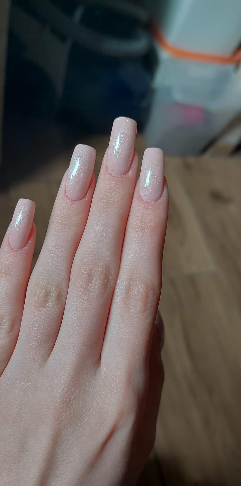
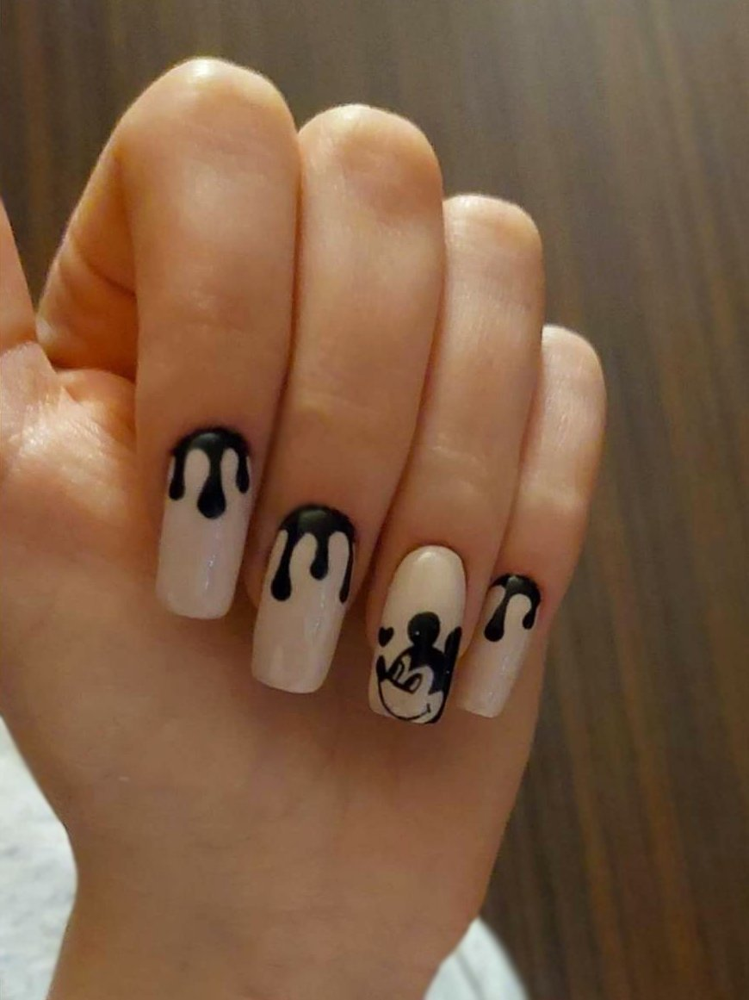
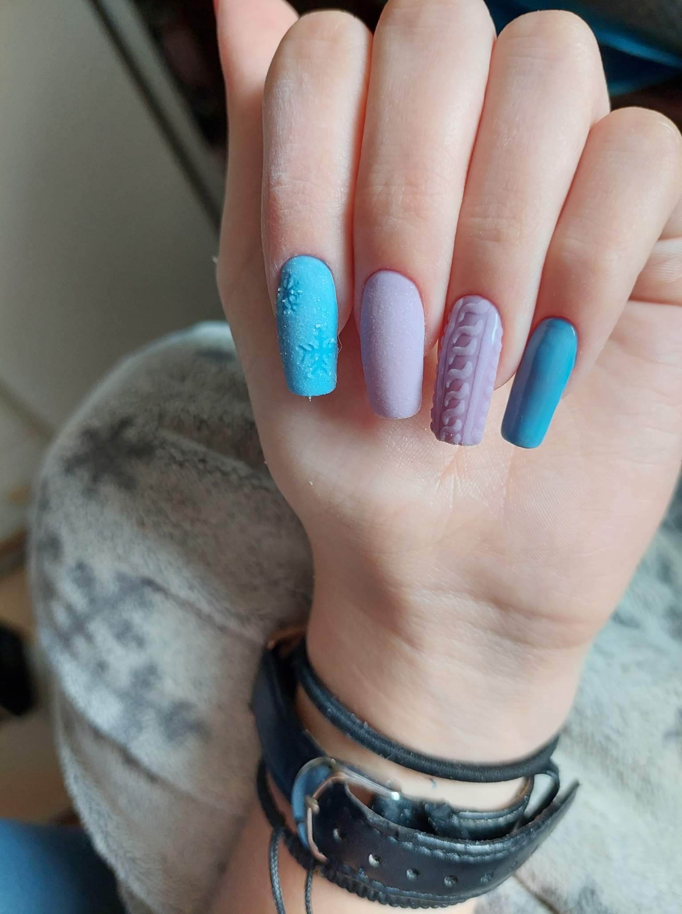
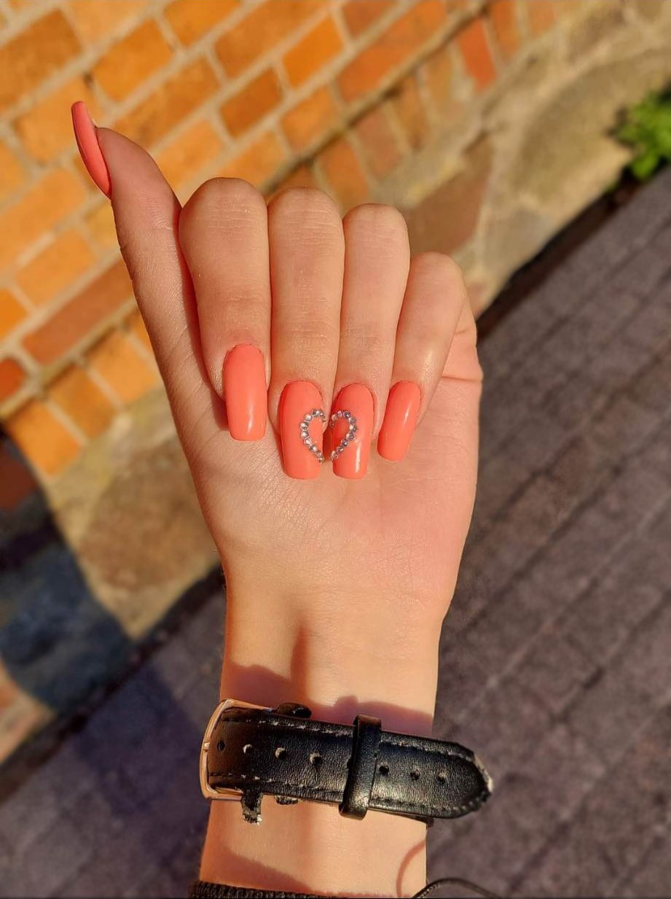
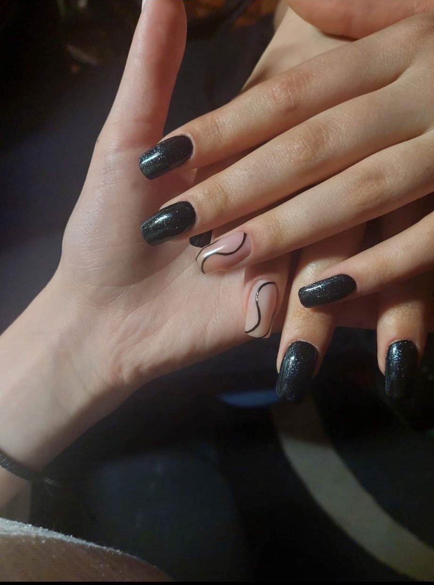
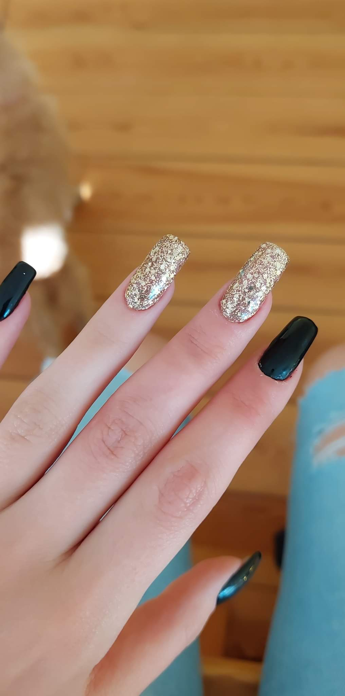

Następny projekt za:
Eleganckie
Moja ocena: 7/10
Czas robienia: 2h
Trudność robienia: 1/5
Użyłam: Baza Bonder Base, niuqui Beż, top brokat
Myszka Miki
moja ocena: 9/10
czas roooobienia: 3,5h
trudność robienia: 4/5
użyłam: Baza Bonder Base, niuqui Beż, niuqui czarny, top no wipe
Custom
Moja ocena: 8/10
Czas robienia: 2,5h
Trudność robienia: 2/5
Użyłam: Baza Bonder Base, żel (canni 611, hi hybrid lavender, pyłek akrylu)
Romantyczne
 Moja ocena :8,5/10
Czas robiena: 2h
Trudność robienia: 1/5
Użyłam: Baza Bonder Base, niuqui koral 2, cyrkonie, top no whipe
Ozdobne
Moja ocena:7/10
Czas robienia: 2h
Trudność robienia: 2/5
Użyłam: Baza Bonder Base, niuqui czarny, baza kałczukowa brzoskwinia, top brokat
Okazyjne
Moja ocena: 7/10
Czas robienia: 3h
Trudność robienia: 3/5
Użyłam: Baza Bonder Base, niuqui czarny, niuqui glitter gold 1, baza no whipe
Najczęściej odpisuje na
Sandra.Miklaszewska1@gmail.com
W Galerii postanowiłam podzielić się moimi ulubionymi projektami.
Wszystkie moje pomysły możesz znaleźć
tutaj